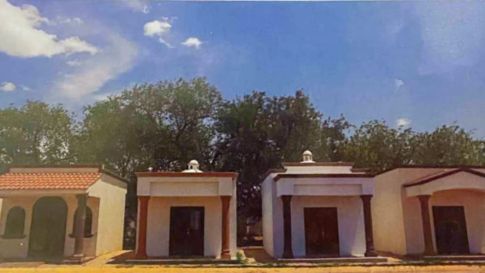
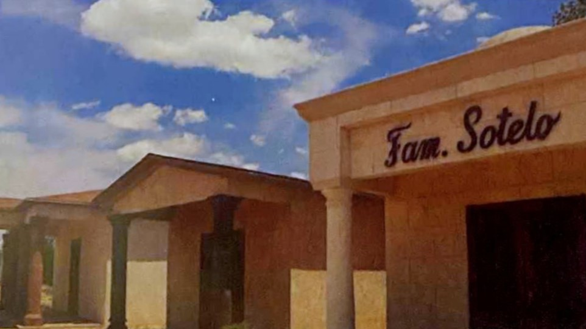
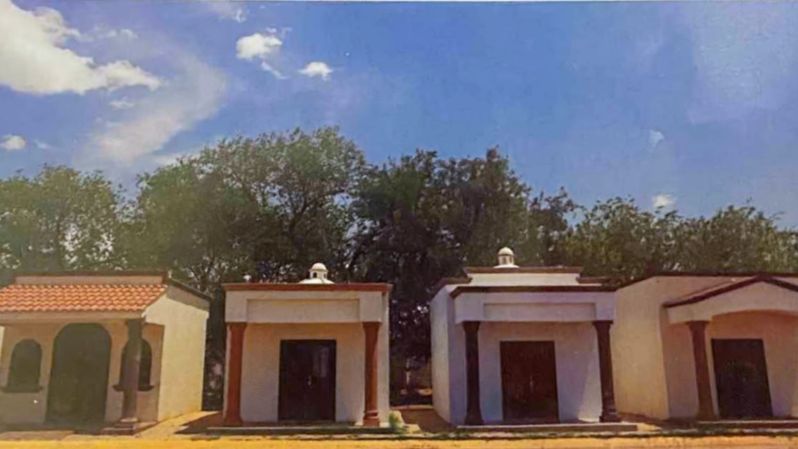
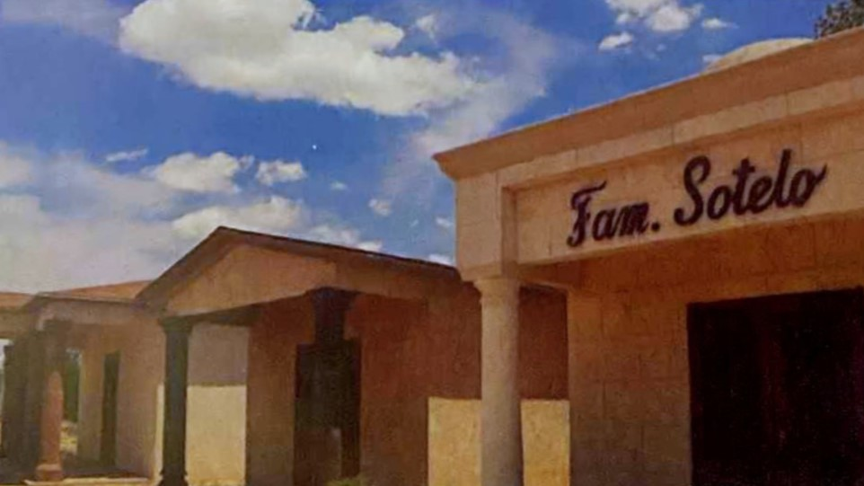

Atención
Personalizada
(656) 268-71-95
Contáctanos
Atención
Personalizada
Contáctanos
Este servicio contempla los siguientes elementos:
• Una fosa cuádruple o doble a perpetuidad en el parque funerario
Recinto de la Oración o Jarines
Eternos.
• Apertura y cierre de la primera gaveta.
• Plan de saldos insolutos del 50% del costo.
Este servicio contempla los siguientes elementos:
• Nicho sencillo, doble, cuádruple o familiar para 6 urnas a perpetuidad en:
- Mausoleo La Paz de Recinto de la Oración
- Nuestra Señora de Guadalupe de Jardines Eternos.
• Mantenimiento a perpetuidad.
• Apertura y cierre de nicho.
• Plan de saldos insolutos.
Este servicio contempla los siguientes elementos:
• Nicho sencillo, doble o cuádruple a perpetuidad en interior de:
- Recinto de la Oración:
- Capillas Juan Pablo II
- Subterraneo
- Mausoleos Versalles
- Jardines Eternos:.
- Capilla Eternidad
• Pago de mantenimiento.
• Apertura y cierre de nicho.
• Plan de saldos insolutos.
Este servicio contempla los siguientes elementos:
• Nicho doble o cuádruple a perpetuidad en Nichos Papa Francisco
dentro de
Recinto de la Oración
• Mantenimiento a perprtuidad.
• Apertura y cierre de nicho.
• Plan de saldos insolutos.
Este servicio contempla los siguientes elementos:
• Una bóveda a perpetuidad en el Mausoleo de
Recinto de la Oración
• Sellado de la bóveda.
• Tapa de mármol blanco "Carrara".
• Nombre, fechas y un texto de hasta 15 palabras en grabado.
• Plan de saldos insolutos del 50% del costo.
Este servicio contempla los siguientes elementos:
• Una bóveda a perpetuidad en el Mausoleo de San Salvador de
Jardines Eternos.
• Sellado de la bóveda.
• Tapa de mármol blanco "Ojinaga".
• Nombre y fechas en grabado.
• 2 Floreros.
• Plan de saldos insolutos del 50% del costo.
Este servicio contempla los siguientes elementos:
• 6 Mausoleos.
• 6 Osarios.
• Nicho para 12 urnas.
• Acabados extremos con textura.
• Acabado interno con granito.
• Entrada privada.
Diseño personalizado en capilla.
 


